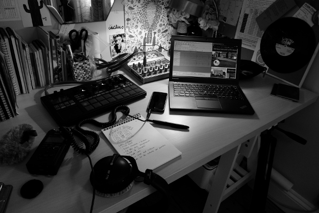
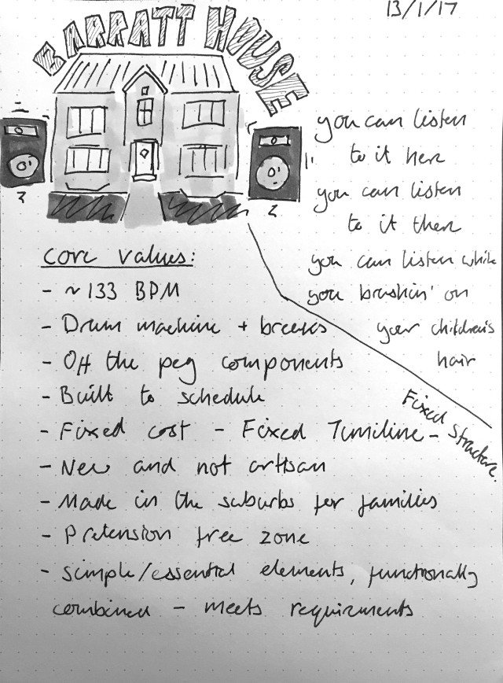

Barratt House
Published:
The ingredients are ready for this year's project: a mixed-media thing. I'm thinking about a combination of web, audio and paper (other stuff too, maybe) all reflecting a shared theme.
Here's the gear:

A picture of the equipment required for Barratt House.
DJ Zinc named his flavour of electronic music [1] Crack House[2].
I'm tentatively going with Barratt House, which follows this (draft) philosophy.

A rough draft of the Barratt House philosophy.
It might sound something like this:
That's all I've got, so far...